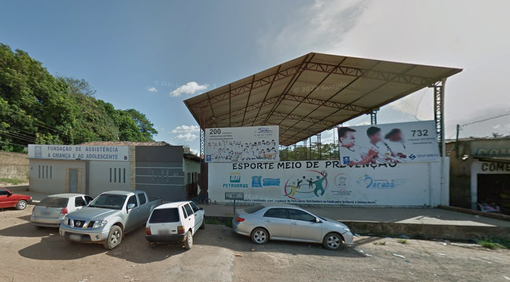
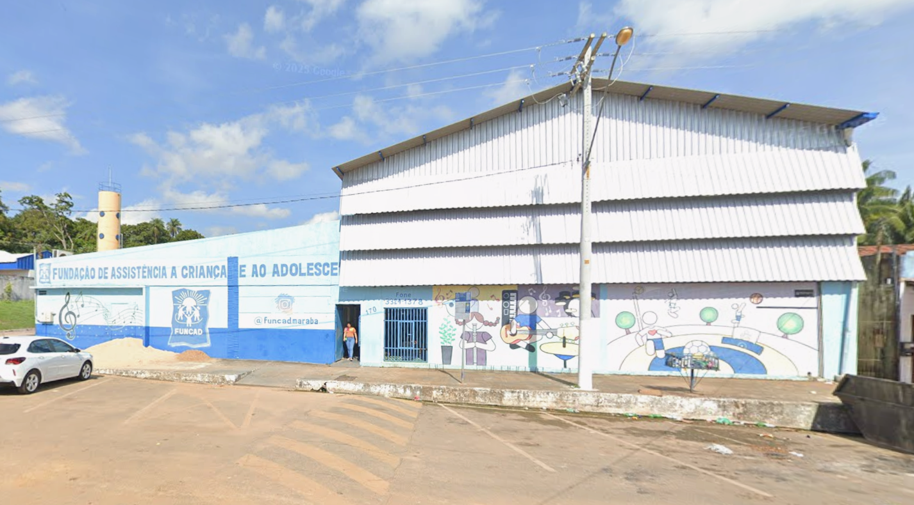

FUNCAD
Inicialmente com o nome FUNDAÇÃO DE ASSISTENCIA A CRIANÇA E AO ADOLESCENTE (FUNCAD), foi fundada em 15 de fevereiro de 2002 com sede na Rua do Aeroporto, Nº 170 no bairro Amapá em Marabá – Pará, como uma instituição sem fins lucrativos.
A instituição é mantida por doações de empresas, pessoas físicas e apoio do poder público.
Tem suas ações e objetivos orientadas pelos princípios da promoção e proteção social de crianças e adolescentes carentes e em situação de vulnerabilidade social e à violência.
A fundação tem desenvolvido diversas ações e projetos, ganha destaque a escolinha de futebol com alunos entre 04 e 17 anos, a escola de música com alunos entre 04 e 17 anos e também as aulas de Inglês que envolve um público com idade entre 06 e 10 anos, reforço escolar atendendo crianças de 08 a 10 anos.
Essas ações são complementadas com atividades externas, tais como participação em amistosos, campeonatos, recital, apresentações musicais.
A FUNCAD, a partir de suas ações e projetos pretende contribuir para o afastamento da juventude das condições de risco que a expõe a violência como as referidas no IVJ-Violência.
Essa realidade resulta de múltiplas causas, embora não possamos afirmar que há uma causa ou causas que determinam, por si só a violência, é possível identificar elementos que constituem uma situação de risco ou vulnerabilidade social que podem expor populações há violências.
